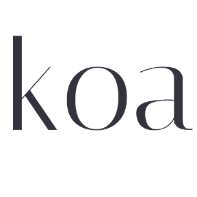

#
Koa

Koa is a new web framework designed by the team behind Express,
which aims to be a smaller, more expressive, and more robust foundation
for web applications and APIs. By leveraging async functions, Koa allows you
to ditch callbacks and greatly increase error-handling. Koa does not bundle any
middleware within its core, and it provides an elegant suite of methods that make
writing servers fast and enjoyable.
Here are 2,062 public repositories matching this topic...
-
Updated
3 days ago - JavaScript
graphql
koa
express
node
hapi
graphql-server
express-graphql
restify
apollographql
graphql-schema
resolvers
-
Updated
7 hours ago - TypeScript
Execute one command (or mount one Node.js middleware) and get an instant high-performance GraphQL API for your PostgreSQL database!
nodejs
api
graphql
http
postgres
koa
express
node
typescript
schema
postgresql
graphql-js
instant
pgsql
pg
koa2
postgraphql
graphql-api
graphile
automatic-api
-
Updated
20 days ago - TypeScript
High performance JavaScript templating engine
-
Updated
on 9 Jan - JavaScript
nodejs
api
docker
koa
nasa
rest-api
space
rocket
launchpad
restful-api
spacex
capsule
space-program
spacex-api
starlink
-
Updated
2 days ago - JavaScript
记录成长的过程
-
Updated
on 1 Jun - JavaScript
OAuth Proxy
nodejs
javascript
aws
middleware
oauth
lambda
koa
oauth2
express
node
authentication
aws-lambda
server
js
serverless
hapi
azure
gcp
authorization
vercel
-
Updated
4 days ago - JavaScript
nodejs
javascript
api
bootstrap
redis
aws
boilerplate
koa
framework
react-native
mvc
mongodb
mongoose
s3
prettier
passport
ava
xo
cloudfront
async-await
-
Updated
on 14 Feb - JavaScript
Romakita
commented
on 6 Feb
Information
Add ajv-errors message customization support.
Ref: https://www.npmjs.com/package/ajv-errors
Related: #833
Example
Configuration:
const Ajv = require("ajv").default
const ajv = new Ajv({allErrors: true})
// Ajv option allErrors is required
require("ajv-errors")(ajv /*, {singleError: true} */)
const schema = {
type: "object",
required: ["foo"],
p
allouis
commented
on 4 Jul 2019
I've read the docs, and it seems you can pass through knex instances, but I didn't see if it supports SQLite3 - could you clarify please?
nodejs
javascript
blog
koa
design-pattern
typescript
frontend
serverless
algorithms
css3
reactjs
leetcode-solutions
leetcode-javascript
nestjs
webpack4
-
Updated
on 24 Mar - Vue
Koa' application generator for 1.x and 2.x（ Express-style and support all middlewares include async/await ）
-
Updated
on 25 Oct 2020 - JavaScript
a node.js web framework based on typescript
-
Updated
11 hours ago - TypeScript
Create a GraphQL HTTP server with Koa.
-
Updated
on 8 May - JavaScript
REST API boilerplate using NodeJS and KOA2, typescript. Logging and JWT as middlewares. TypeORM with class-validator, SQL CRUD. Docker included. Swagger docs, actions CI and valuable README
heroku
docker
cors
jwt
koa
crud
node
typescript
sql
rest-api
swagger
winston
helmet
nodemon
typeorm
koa2
koa-router
class-validator
koa-jwt
github-actions
-
Updated
3 days ago - TypeScript
Passport middleware for Koa
-
Updated
17 days ago - JavaScript
Vue，React，微信小程序，快应用，TS , Koa, JS一把梭
-
Updated
2 days ago - JavaScript
mysql
docker
koa
vue
jest
docker-compose
vue2
todolist
koa2
jest-tests
vue-ssr
docker-support
vue-koa-demo
vue-koa-ssr
-
Updated
on 11 Dec 2020 - JavaScript
Describe the bug
Using xframe
ALLOW-FROMthrows error in console:Invalid 'X-Frame-Options' header encountered when loading 'https://api.dev.mysite.com/uploads/my-file.pdf': 'ALLOW-FROM dev.mysite.com' is not a recognized directive. The header will be ignored.https://strapi.io/documentation/v3.x/concepts/middlewares.html#response-middlewares
instructions for xframe indicate `ALLOW-FR